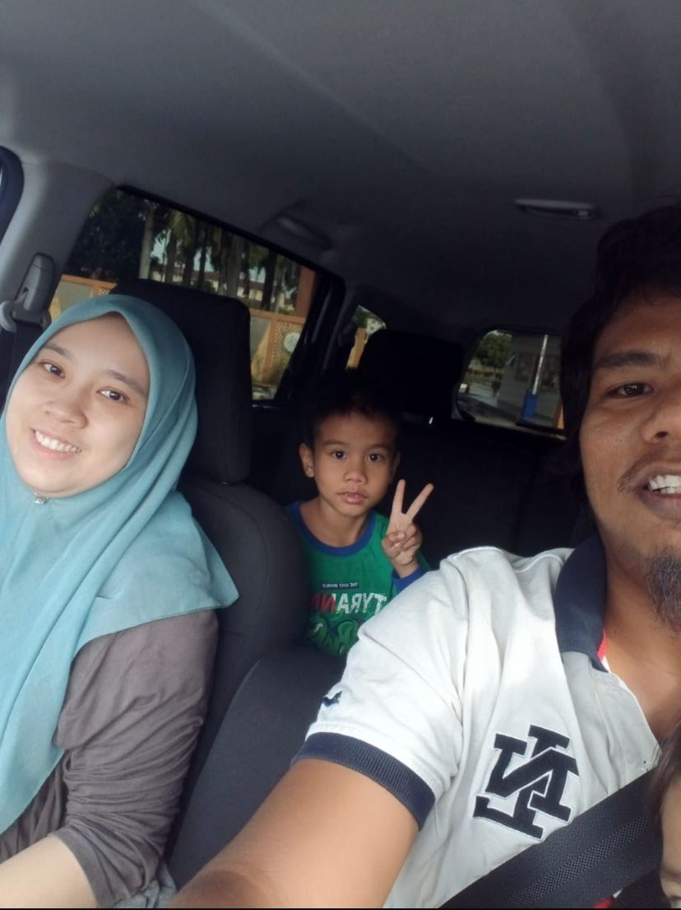
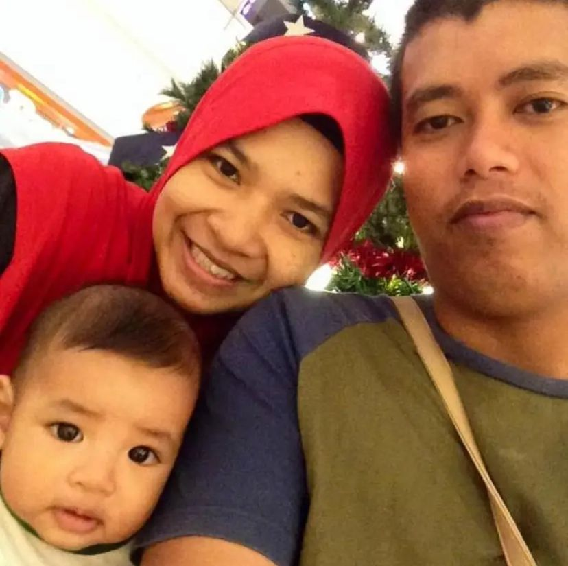
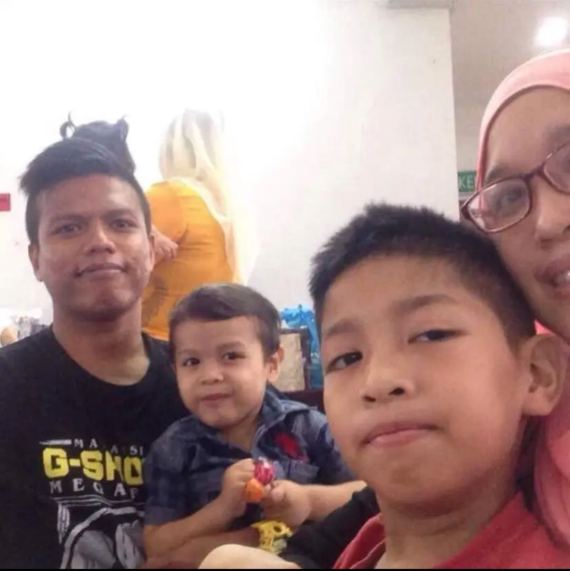
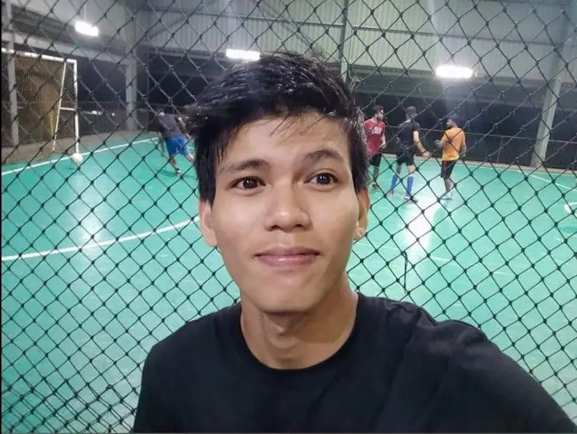
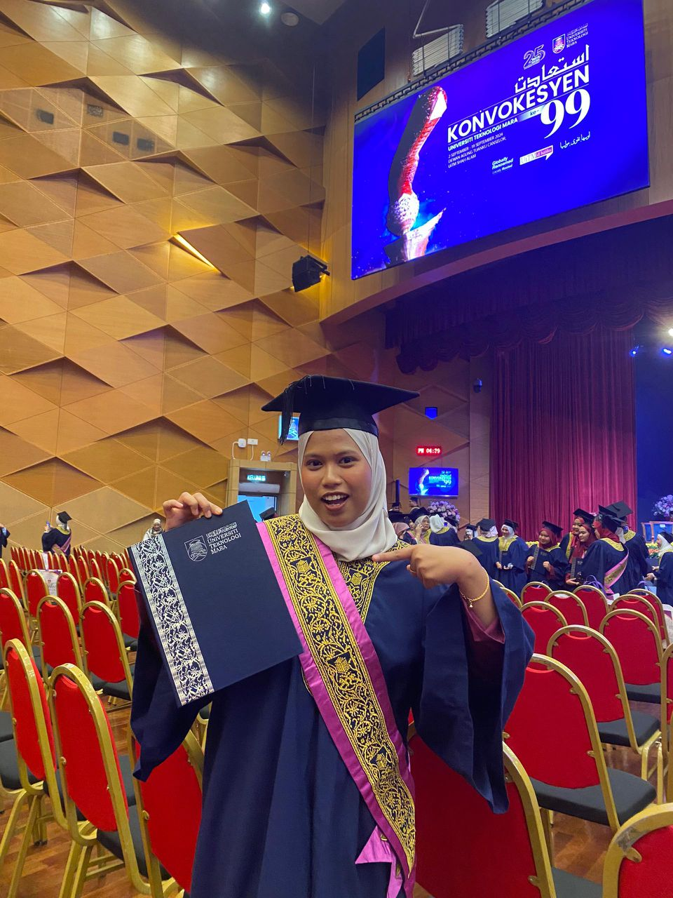
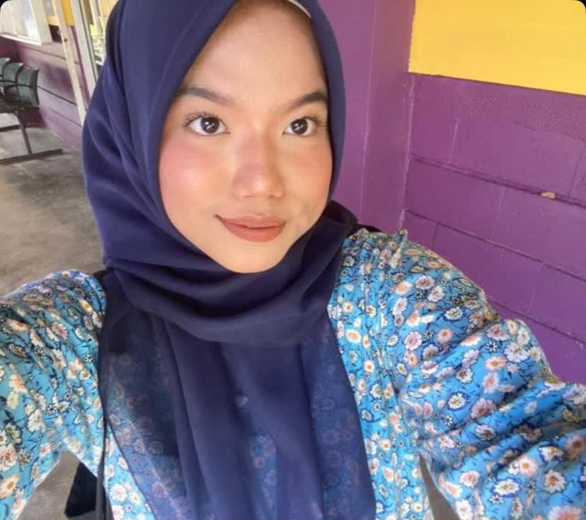
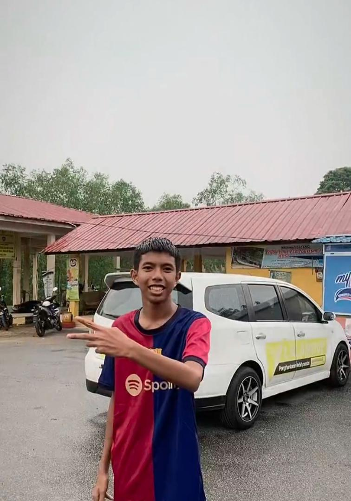

This is my family. I have 8 siblings, consisting of 6 brothers and 2 sisters, and I am the seventh child out of 8 siblings. My father is from Rembau, Negeri Sembilan, and my mother is from Teluk Intan, Perak. This photo was taken during our last family gathering on Hari Raya in 2012. In 2014, my mother was diagnosed with kidney cancer, and she passed away in 2015. Losing her was a deeply profound experience that changed everthing in our family. Although my mother is no longer with us, the beautiful memories of that last celebration remain in our hearts forever.
In 2021, my father married the women he loved, starting a new life after my mother's passing. For five years, he raised all of us, especially three younger ones, on his own. Perhaps he needed someone to help take care of us and look after him while he worked during the day and returned in the evening. Every time he came home, he would prepare meals for us. Although it was difficult for us to accept his decision at first, over time we understood that if it him happy, we also wanted to see him happy.
|

Muhd Shaifullah |

Muhd Ibnu Qayyim |

Muhd Nor Shafiq |
Muhd Nor Imran |
|

Muhd Nor Idzham |

Intan Mariyah |

Intan Natasya |

Muhd Ibnu Latif |